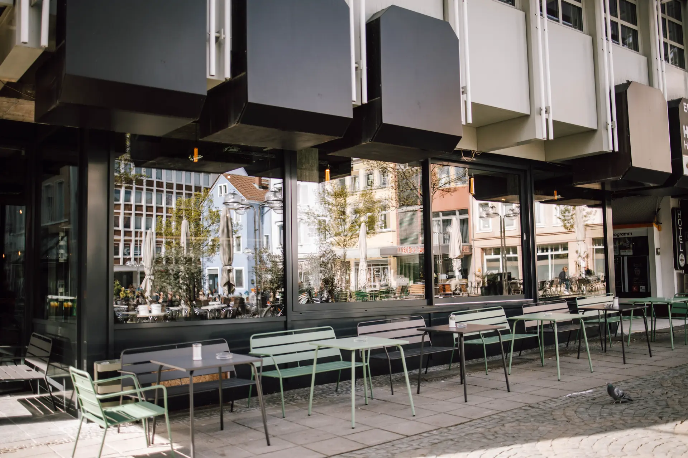
Feel at Home
Obermarkt 8.
Mitten in Worms.
Öffnungszeiten
- Mo – Do09:00 – 20:00
- Fr – Sa09:00 – 22:00
- So12:00 – 18:00
Inside Coffee Brothers
Komm rein und
mach's dir bequem.
Pflanzen, weiche Sitze, Bagels und Kaffee — und mittendrin wir. Ein Blick in den Laden:
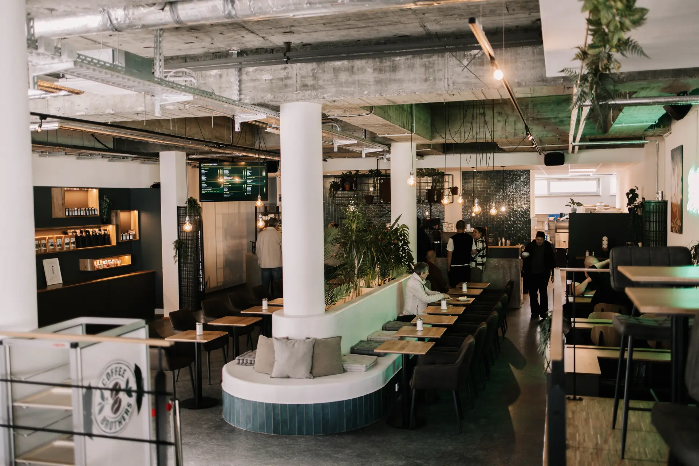
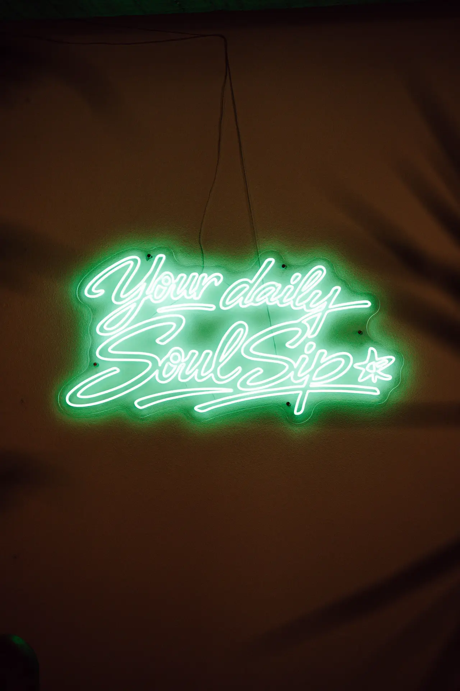
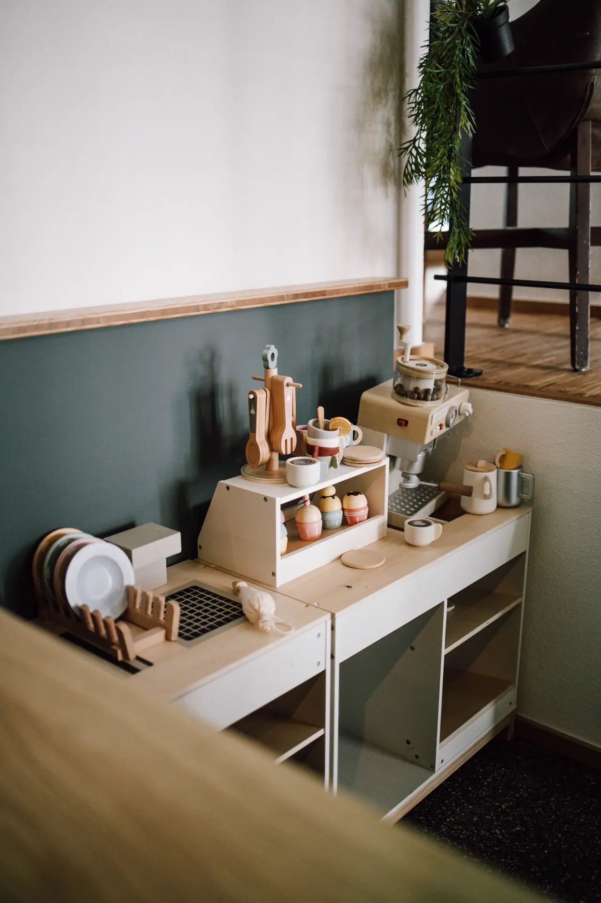
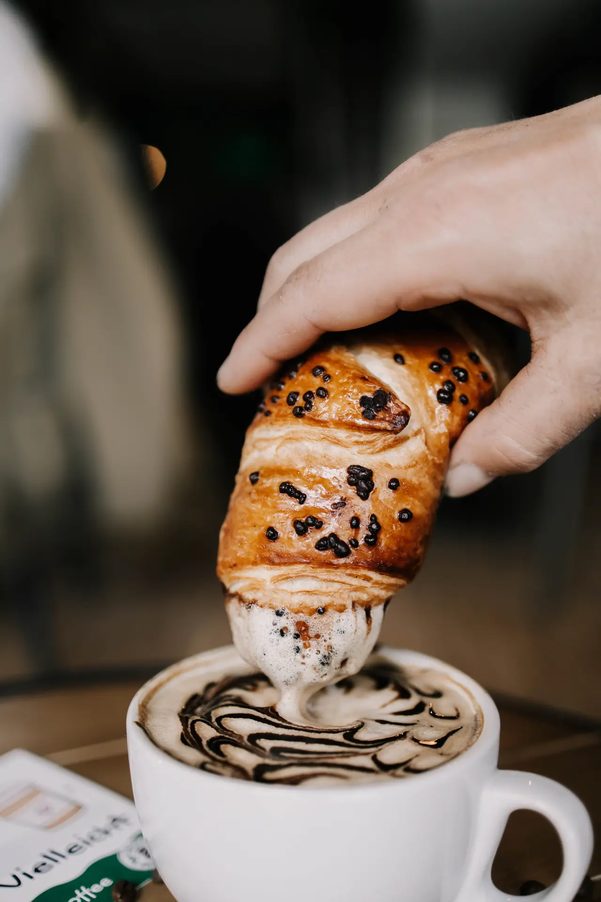
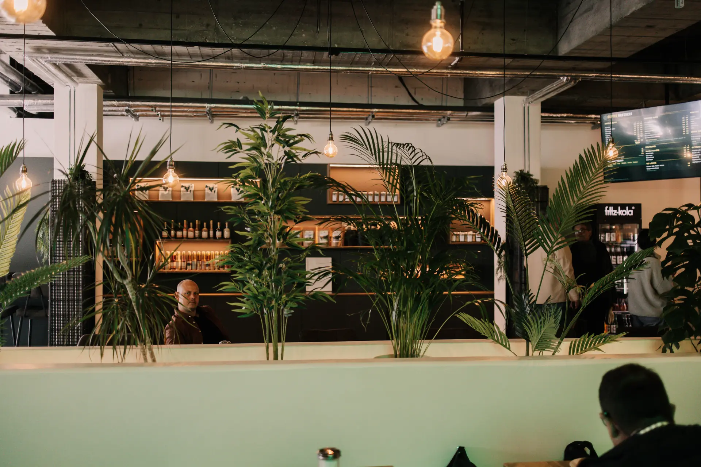
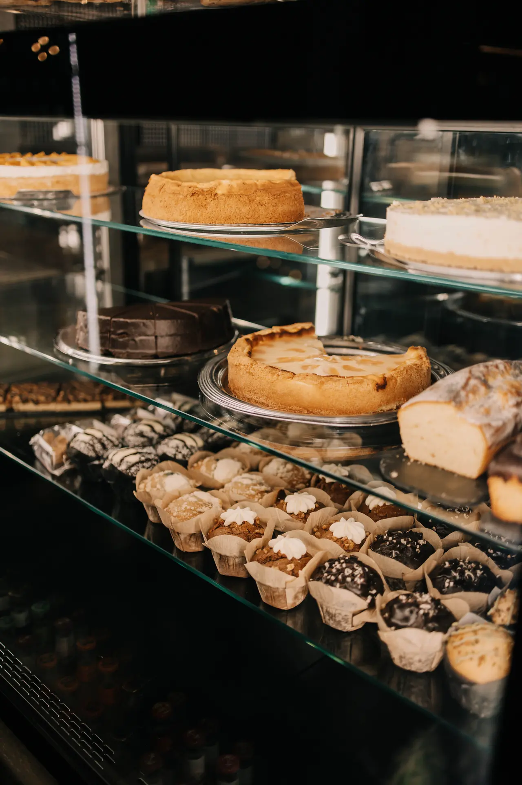
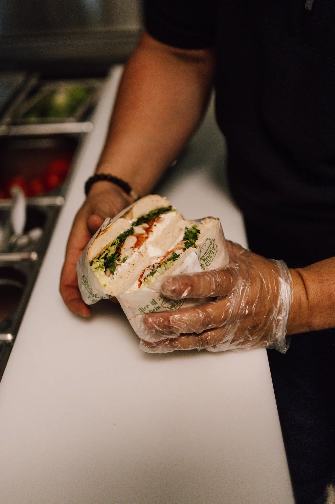
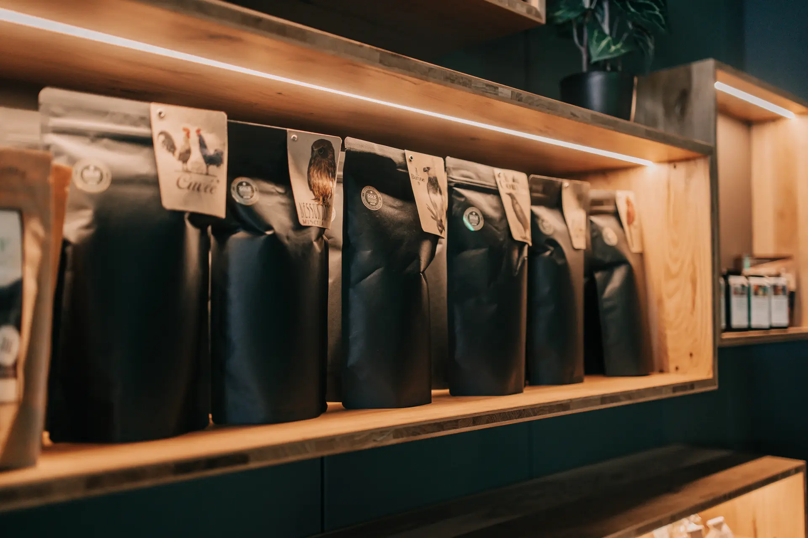
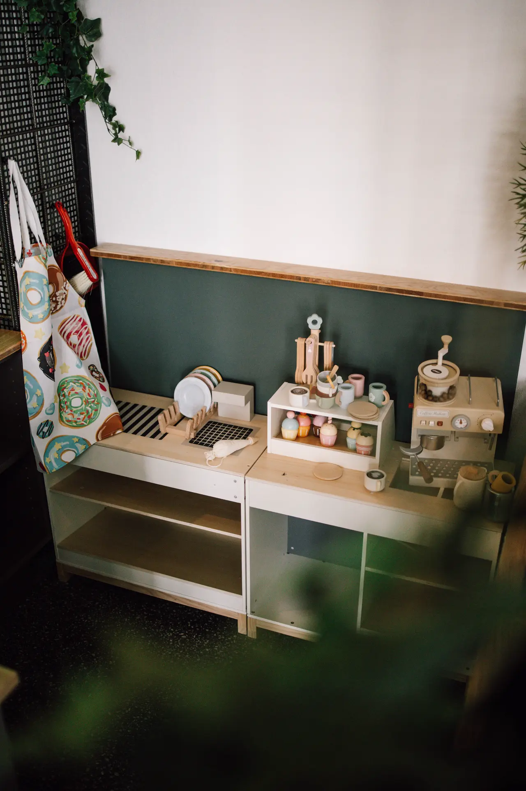
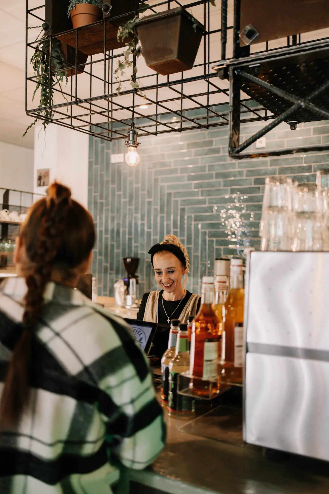
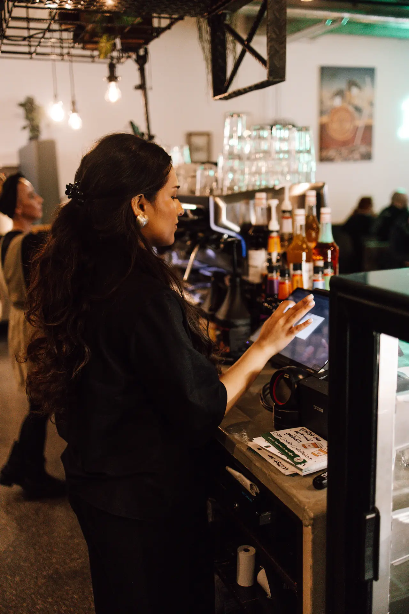
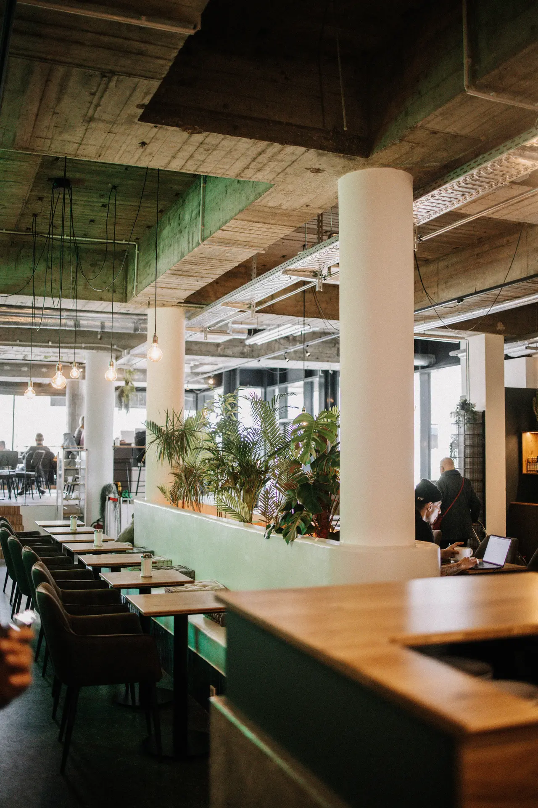